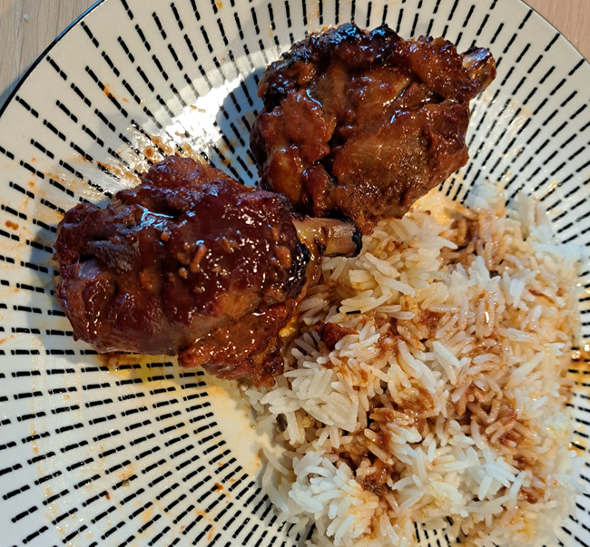

Honey-Soy Glazed Duck Wings (Manchons de Canard)

Instructions
Prepare the Marinade
Preheat the oven to 210°C (410°F). In a mixing bowl, combine olive oil, soy sauce (or Maggi seasoning), whole-grain mustard, honey or maple syrup, ketchup, tomato paste, and ground ginger.
Marinate the Duck
Brush the duck wings generously with the marinade using a pastry brush (or your hands). Place them in a baking dish and pour any remaining marinade over them. Marinate for at least 1 hour, or up to overnight for deeper flavor.
Roast the Duck – First Side
Place the dish in the oven and roast for 20 minutes, until the wings begin to caramelize.
Add Potatoes (Optional)
Turn the wings over. If using potatoes, add them now. The rendered duck fat will help cook and flavor them.
Roast the Duck – Second Side
Continue roasting for 20 more minutes. Depending on your oven, you may need to extend cooking by 5 minutes per side for deeper caramelization.
Serve
Serve immediately while hot, with the caramelized sauce and optional roasted potatoes.